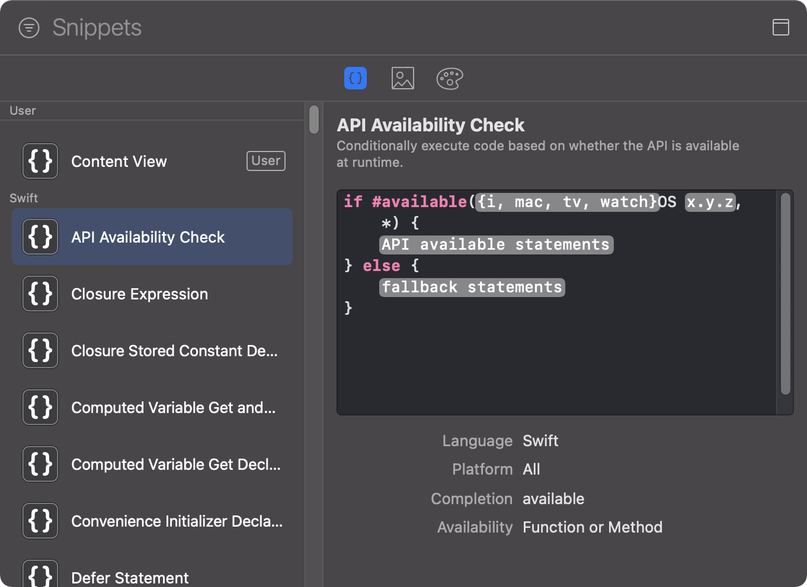
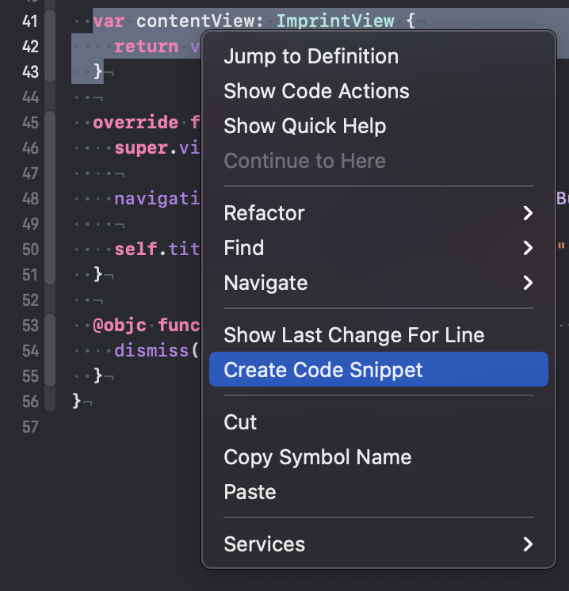
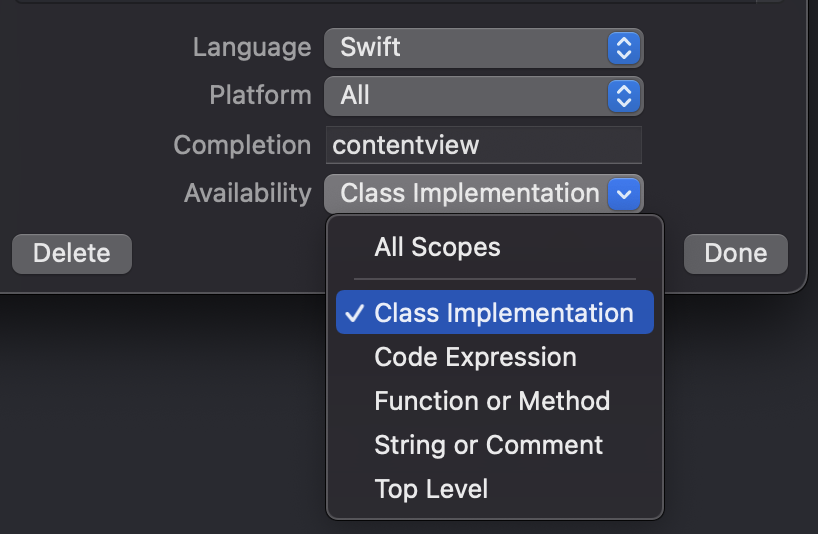

The Snippet Library In Xcode
The Library Window
The Snippet library is part of the library in Xcode. You open the library from the menu item ‘View / Show Library’ or with the shortcut ⇧⌘L.
The library window hosts different kind of libraries: the Views library, the Modifiers library, the Snippets library, the Media library and the Color library. The Snippet library is the one with the icon showing curly braces.
The Snippet Library
Xcode comes with many preinstalled snippets for different tasks. You should take a few minutes and scroll through the library and see what could be useful for you. Probably you’ll find snippets there you usually search on the internet. But the real power comes from the snippets you add to the library. To add a snippet, select the code you’d like to transform into a snippet and ⌃click to open the context menu. Select ‘Create Code Snippet’.
Xcode opens the snippet editor with the selected code. You type in a name and a summary for that snippet to help your future self to figure out what the snippet is for. To change parts of the code into tokes, put them between <# and #>.
When using that snippet in code completion, you can jump to these tokes with the tabulator key. To tell Xcode that you would like to see this snippet in code completion while you are typing in the code editor, add an abbreviation in the ‘Completion’ field. To make the snippet as useful as possible define the ‘Availability’ as specific as possible.
Sharing snippets
The snippets are stored as .codesnippet-files in the directory ‘~/Library/Developer/Xcode/UserData/CodeSnippets/’. This means you can easily share the snippets you created with other developers. You can even put that directory under version control and use a service like Github or Gitlab to install your snippets on all computers you use.
Follow me on Twitter for more content about iOS development.